건설기계설비기사 (2010-05-09 기출문제)
1과목: 재료역학
1. 밀도가 일정한 정육면체형 물체의 각 변의 길이가 처음의 3배로 되었을 때 이 정육면체의 바닥면에 발생되는 자중에 의한 수직 응력의 크기는 처음의 몇 배가 되겠는가?
- 1
- 3
- 9
- 27
(정답률: 알수없음)

2. 균일분포하중 ω를 받고 있는 길이가 L인 단순보의 처짐을 δ로 제한한다면 균일 분포하중의 크기는 어떻게 표혀되겠는가? (단, 보의 단면은 폭이 b이고 높이가 h인 직사각형이고 탄성계수는 E이다.)
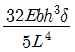
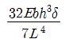
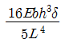
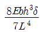
(정답률: 알수없음)
3. 코일 스프링의 소선의 지름을 d, 코일의 평균 지름을 D, 코일 전체 길이가 L인 경우 인장하중 W를 작용시킬 때 전체의 처짐량(δ)을 나타내는 식은? (단, G는 전단 탄성계수이고, n은 코일의 감김 수이다.)
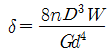
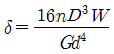
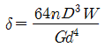
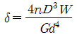
(정답률: 알수없음)
4. 아래 그림에서 모멘트의 최대값은 몇 kNㆍm인가? (단, B점은 고정이다.)
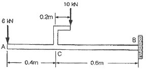
- 10
- 16
- 26
- 40
(정답률: 알수없음)
5. 길이가 2m인 환봉에 인장하중을 가하였더니 길이 변화량이 0.14cm였다. 이 때의 변형률은?
- 70 × 10-6
- 700 × 10-6
- 70
- 700
(정답률: 알수없음)
6. 그림과 같은 균일 원형단면을 갖는 양단 고정봉의 C점에 비틀림 모멘트 T=98Nㆍm를 작용시킬 때, 하중점(C점)에서의 비틀림 각은 몇 rad 인가? (단, 전단탄성계수 G=78.4GPa, 극관성모멘트 Ip=600cm4)
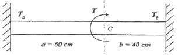
- 4 × 10-4
- 4 × 10-5
- 5 × 10-4
- 5 × 10-5
(정답률: 알수없음)
7. 지름 d인 원형단면 봉이 비틀림 모멘트 T를 받을 때, 발생되는 최대 전단응력 τ를 나타내는 식은? (단, IP는 단면의 극단면 2차 모멘트이다.)
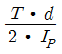
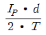
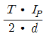
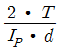
(정답률: 알수없음)
8. 내부 반지름 1.25m, 압력 1200kPa, 두께 10mm인 원형 단면의 실린더형 압력 용기에서의 축방향 응력(σt:longi-tudinal stress)과 후프응력(σz)를 구하면?
- σt=75MPa, σz=150MPa
- σt=150MPa, σz=75MPa
- σt=37.5MPa, σz=75MPa
- σt=75MPa, σz=37.5MPa
(정답률: 알수없음)
9. 그림과 같은 복합 막대가 각각 단면적 AAB=100mm2, ABC=200mm2을 갖는 두 부분 AB와 BC로 되어있다. 막대가 100kN의 인장하중을 받을 때 총 신장량을 구하면 몇 mm인가? (단, 재료의 탄성계수(E)는 200GPa이다.)
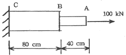
- 2
- 4
- 6
- 8
(정답률: 알수없음)
10. 그림과 같은 규일 단면의 돌출보(overhanging beam)에서 반력 RA는? (단, 보의 자중은 무시한다.)
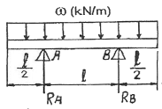
- ωℓ
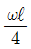
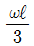
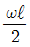
(정답률: 알수없음)
11. 어떤 재료의 탄성계수 E=210GPa이고 전단 탄성계수 G=83GPa이라면 이 재료의 포아송 비는? (단, 재료는 균일 및 균질하며, 선형 탄성거동을 한다.)
- 0.265
- 0.115
- 1.0
- 0.435
(정답률: 알수없음)
12. 탄성계수 E=200GPa, 좌굴응력 σB=320MPa인 강재 기둥에 오일러(Euler) 공식을 적용할 수 있는 한계 세장비는? (단, n은 양단지지 상태에서 따른 좌굴 계수이다.)
- 62.5√n
- 78.5√n
- 85.5√n
- 90.5√n
(정답률: 알수없음)
13. 그림과 같이 균일 분포하중(ω)을 받는 균일 단면 외팔보의 자유단 B에서 의 처짐량은? (단, 보의 굽힘 강성 EI는 일정하고, 자중은 무시한다.)
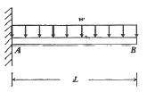
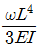
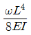
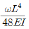
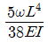
(정답률: 알수없음)
14. 그림과 같은 보는 균일단면 부정정보이다. 반력 RB를 구하는데 필요한 조건은?
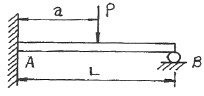
- 지점 B에서의 반력에 의한 처짐
- 지점 A에서의 굽힘모멘트의 방향
- 하중 작용점 P에서의 처짐
- 하중 작용점 P에서의 굽힘응력
(정답률: 알수없음)
15. 5cm×10cm 다면의 3개의 목재를 목재용 접착재로 접착하여 그림과 같은 10cm×15cm의 사각 단면을 갖는 합성보를 만들었다. 접착부에 발생하는 전단응력은 약 몇 kPa인가? (단, 이 보의 길이는 2m이고, 양단은 단순지지이며 중앙에 P=800N의 집중하중을 받는다.)
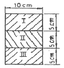
- 77.6
- 35.5
- 8
- 160
(정답률: 알수없음)
16. 다음 그림과 같이 단면적인 A인 강봉의 축선을 따라 하중P가 작용할 때, 임의의 경사 평면에서 전단응력이 최대가 될 때의 면의 각(α)과 이 경우에 해당하는 전단응력(τmax)은 얼마인가?
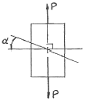
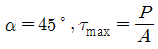
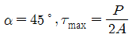
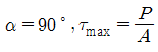
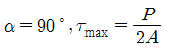
(정답률: 알수없음)
17. 그림에서 블록 A를 뽑아내는 데 필요한 힘 P는 몇 N이상인가? (단, 블록과 접촉면과의 마찰 계수 μ=0.4이다.)
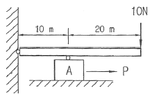
- 4
- 8
- 10
- 12
(정답률: 알수없음)
18. 내부 반지름 Ri, 외부반지름 Ro인 속이 빈 원형 단면의 극(polar)관성 모멘트는?
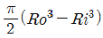
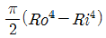
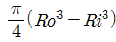
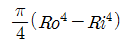
(정답률: 알수없음)
19. 그림과 같이 초기온도 20℃, 초기길이 19.95cm, 지름 5cm인 봉을 간격이 20cm인 두 벽면 사이에 넣고 봉의 온도를 220℃로 가열했을 때 봉에 발생되는 응력은 몇 MPa인가? (단, 균일 단면을 갖는 봉의 선팽창계수 a=1.2×10-5/℃이고, 탄성계수 E=210GPa이다.)
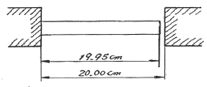
- 0
- 25.2
- 257
- 504
(정답률: 알수없음)
20. 지름 6mm인 곧은 강성을 지름 1.2m의 원통에 감았을 때 강선에 생기는 최대 굽힘 응력은 약 몇 MPa인가? (단, 탄성계수 E=200GPa이다.)
- 500
- 800
- 900
- 1000
(정답률: 알수없음)
2과목: 기계열역학
21. 다음 T-S 선도에서 과정 1-2가 가역일 때 빗금 친 부분은 무엇을 나타내는가?
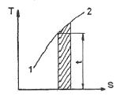
- 엔탈피
- 엔트로피
- 열량
- 일량
(정답률: 알수없음)
22. 냉동시스템의 증발기(열교환기)에 냉매 R-134a가 온도 5℃, 엔탈피 380kJ/kg, 질량 유량 0.1kg/s로 유입되어 포화증기로 유출된다. 공기는 25℃로 유입되어 10℃로 나온다. 공기의 비열은 1.004kJ/kgㆍ℃이다. 증발기를 통과하는 공기의 질량 유량은?
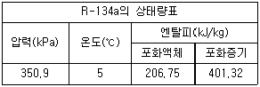
- 0.142kg/s
- 0.270kg/s
- 0.851kg/s
- 1.15kg/s
(정답률: 알수없음)
23. 다음 사항은 기계열역학에서 일과 열(熱)에 대한 설명이다. 이 중 틀린 것은?
- 일과 열은 전달되는 에너지이지 열역학적 상태량은 아니다.
- 일의 기본단위는 J(joule)이다.
- 일(work)의 크기는 무게(힘)와 힘이 작용하여 이동한 거리를 곱한 값이다.
- 일과 열은 정함수이다.
(정답률: 알수없음)
24. 비가역 단열변화에 있어서 엔트로피 변화량은 어떻게 되는가?
- 증가한다.
- 감소한다.
- 변화량은 없다.
- 증가할 수도 감소할 수도 있다.
(정답률: 알수없음)
25. 1kg의 기체가 압력 50kPa, 체적 2.5m3의 상태에서 압력 1.2MPa, 체적 0.2m3의 상태로 변하였다. 엔탈피의 변화량은 약 몇 kJ인가? (단, 내부에너지의 증가 U2-U1=0이다.)
- 306
- 206
- 155
- 115
(정답률: 알수없음)
26. 다음 열역학 성질(상태량)중 종량적 성질인 것은?
- 질량
- 온도
- 압력
- 비체적
(정답률: 알수없음)
27. 증기동력시스템에서 이상적인 사이클로 카르노사이클을 택하지 않고 랭킨사이클을 택한 주된 이유로 가장 적합한 것은?
- 이론적으로 카르노사이클을 구성하는 것이 불가능하다.
- 랭킨사이클의 효율이 동일한 작동 온도를 갖는 카르노 사이클의 효율보다 높다.
- 수증기와 액체가 혼합된 습증기를 효율적으로 압축하는 펌프를 제작하는 것이 어렵다.
- 보일러에서 과열 과정을 정압 과정으로 가정하는 것이 타당하지 않다.
(정답률: 알수없음)
28. 다음 P-h 선도를 이용하여 증기압축 냉동기의 성능계수를 구하면 얼마인가?
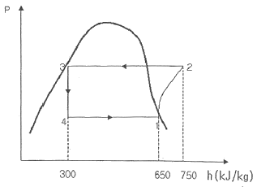
- 3.5
- 4.5
- 5.5
- 6.5
(정답률: 알수없음)
29. 냉동용량이 35kW인 어느냉동기의 성능계수가 4.8이라면 이 냉동기를 작동하는 데 필요한 동력은?
- 약 9.2kW
- 약 8.3kW
- 약 7.3kW
- 약 6.5kW
(정답률: 알수없음)
30. 증기터빈에서 증기의 상태변화로서 가장 이상적인 것은?
- 폴리트로픽 변화(n=1.3)
- 폴리트로픽 변화(n=1.5)
- 가역단열변화
- 비가역단열변화
(정답률: 알수없음)
31. 고열원과 저열원 사이에서 작동하는 카르노사이클 열기관이 있다. 이 열기관에서 60kJ의 일을 얻기 위하여 100kJ의 열을 공급하고 있다. 저 열원의 온도가 15℃라고 하면 고 열원의 온도는?
- 128℃
- 288℃
- 447℃
- 720℃
(정답률: 알수없음)
32. 피스톤-실린더 장치 안에 300kPa, 100℃의 이산화탄소 2kg이 들어있다. 이 가스를 PV1.2=constant인 관계를 만족하도록 피스톤 위에 추를 더해가며 온도가 200℃가 될 때까지 압축하였다. 이 과정 동안의 열전달량은 약 몇 kJ인가? (단, 이산화탄소의 정적비열(Cv_=0.653kJ/kgㆍK이고, 정압비열(Cp)=0.842kJ/kgㆍK이며, 각각일정하다.)
- -189
- -58
- -20
- 130
(정답률: 알수없음)
33. 온도가 350K인 공기의 절대압력이 0.3MPa, 체적이 0.3m3, 엔탈피가 100kJ이다. 이 공기의 내부에너지는?
- 1kJ
- 10kJ
- 15kJ
- 100kJ
(정답률: 알수없음)
34. 움직이고 있떤 중량 5ton의 차에 브레이크를 걸었더니 42.7m미끄러진 후에 완전히 정지하였다. 노면과 바퀴 사이의 마찰계수를 0.2라 하면, 제동 중에 발생된 열량은 약 몇 kJ인가?
- 49
- 419
- 839
- 17800
(정답률: 알수없음)
35. 다음 기체 중 기체상수가 가장 큰 것은?
- 수소
- 산소
- 공기
- 질소
(정답률: 알수없음)
36. 이상적인 시스템에 하루 2200kcal를 공급한다고 한다. 이 시스템에서 발생하는 평균 동력은 약 얼마인가? (단, 1kcal은 4180J이다.)
- 63W
- 88W
- 98W
- 106W
(정답률: 알수없음)
37. 정상상태 정상유동 과정의 팽창밸브가 있다. 입구에 액체가 유입되며, 이 과정을 스로트로 간주할 수 있다. 입구상태를 1, 출구상태를 2로 각각 나타낼 때, 다음 중 어느 관계식이 가장 정확한가?
- U1=U2(내부에너지)
- h1=h2(엔탈피)
- s1=s2(엔트로피)
- v1=v2(비체적)
(정답률: 알수없음)
38. 포화증기를 단열 압축시키면 일반적으로 어떻게 되겠는가?
- 압력이 높아지고 습도가 증가한다.
- 압력은 높아지나 온도는 일정하다.
- 압력과 온도가 높아져 과열증기가 된다.
- 압력은 높아지나 온도는 낮아진다.
(정답률: 알수없음)
39. 물 10kg을 1 기압 하에서 20℃로부터 60℃까지 가열할 때 엔트로피의 증가량은 약 몇 kJ/K인가? (단, 물의 정압비열은 4.18kJ/이다.)
- 9.78
- 5.35
- 8.32
- 41.8
(정답률: 알수없음)
40. 상태 1에서 상태 2로의 열역학 과정 중 운동에너지와 위치에너지의 변화를 무시할 때 일을
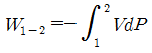
로 계산할 수 있는 경우는? (단, P는 압력, V는 체적이다.)- 가역 정상상태 정상유동 과정
- 비가역 정상상태 정상유동 과정
- 가역 밀폐 시스템의 과정
- 비가역 밀폐 시스템의 과정
(정답률: 알수없음)
3과목: 기계유체역학
41. 그림과 같이 단면적이 A인 관으로 밀도가 ρ인 비압축성 유체가 V의 유속으로 들어와 지름이 절반인 노즐로 분출 되고 있다. 제트에 의해서 평판에 작용하는 힘은?
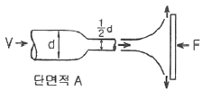
- ρV2A
- 2ρV2A
- 4ρV2A
- 16ρV2A
(정답률: 알수없음)
42. 실형의 1/25인 기하학적으로 상사한 모형 댐이 있다. 모형 댐의 상봉에서 유속이 1m/s일 때 실형의 대응점에서의 유속은 몇 m/s인가?
- 0.04
- 0.2
- 5
- 25
(정답률: 알수없음)
43. 일정 간격의 두 평판사이로 흐르는 완전 발달된 비압축성 정상유통에서 x는 유동방향, y는 직교방향의 좌표를 나타낼 때 압력강하와 마찰손실의 관계가 될 수 있는 것은? (단, P는 압력, τ는 전단응력, μ는 점성계수이다.)
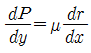
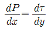
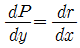
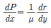
(정답률: 알수없음)
44. 직경이 10cm인 수평 원 관으로 3km 떨어진 곳에 원유(점성계수 μ=0.02 Paㆍs, 비중 s=0.86)를 0.2m3/min의 유량으로 수송하기 위해서 필요한 동력은 약 몇 W인가?
- 127
- 271
- 712
- 1270
(정답률: 알수없음)
45. 경계층의 속도분포가 u=10y(1+0.⑤y3)이고 y방향의 속도성분 v=0일 때 벽면으로부터 수직거리 y=1m 지점에서의 와도(vorticity)는?
- -6s-1
- -10.5s-1
- -12s-1
- -24s-1
(정답률: 알수없음)
46. 주철관을 통하여 유량 0.2m3/s로 기름을 운반하려 한다. 마찰계수는 0.019로 가정하고 관의 길이 1000m에서 손실 수두가 8m로 되는 관의 지름 약 몇 cm인가?
- 3.8
- 7.6
- 38
- 76
(정답률: 알수없음)
47. 경계층에 대한 설명으로 가장 적절한 것은?
- 점성유동 영역과 비점성 유동 영역의 경계를 이루는 층
- 층류영역과 난류영역의 경계를 이루는 층
- 정상유동과 비정상유동의 경계를 이루는 층
- 아음속 유동과 초음속 유동사이의 변화에 의하여 발생하는 층
(정답률: 알수없음)
48. 탱크 속의 액면이 점선의 위치에서 현 액면위치 D까지 서서히 내려왔다. 액면의 속도를 무시할 때 파이프 출구 C에서의 유출 속도 Vc는 약 몇 m/s인가? (단, 관에서의 마찰은 무시한다.)
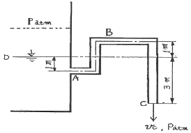
- 3.1
- 6.2
- 7.7
- 9.9
(정답률: 알수없음)
49. 펌프로 물을 양수할 때 흡입측에서의 압력이 진공 압력계로 75mmHg이다. 이 압력은 절대 압력으로 약 몇 kPa인가? (단, 수은의 비중은 13.6이고, 대기압은 760mmHg이다.)
- 91.3
- 10.0
- 100.0
- 9.1
(정답률: 알수없음)
50. 흐르는 물의 유속을 측정하기 위하여 삽입한 피토 정압관에 비중이 3인 액체를 사용하는 마노미터를 연결하여 측정한 결과 액주의 높이 차이가 10cm로 나타났다면 유속은 약 몇 m/s인가?
- 0.99
- 1.40
- 1.98
- 2.43
(정답률: 알수없음)
51. 지름 2cm인 수평 원관으로 점성계쑤가 1×10-3Paㆍs인 물이 층류로 흐른다. 1m 흐를 때마다 100Pa의 압력강하가 일어난다면 유량은 몇 m3/s인가?
- 6.25×10-5
- 1.25×10-4
- 1.97×10-4
- 3.93×10-4
(정답률: 알수없음)
52. 5cm의 지름을 가진 구가 공기 속을 20m/s의 속도로 날고 있다. 이 때 항력은 몇 N인가? (단, 공기의 비중량은 12N/m3이고, 항력계수는 0.4이다.)
- 0.172
- 0.214
- 0.321
- 0.428
(정답률: 알수없음)
53. 그림과 같이 입구속도 Uo의 비압축성 유체의 유동이 평판 위를 지나 출구에서의 속도분포가
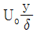
가 된다. 검사체적을 ABCD로 취한다면 단면 CD를 통과하는 유량은? (단, 그림에서 검사체적의 두께는 δ, 평판의 폭은 b이다.)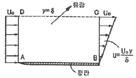
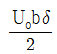
(정답률: 알수없음)
54. 정상 유동(steady flow)은 어떤 유동인가? (단, P, V는 임의 점의 압력, 속도이다.)
 인 유동
인 유동 인 유동
인 유동- 유동장 내의 임의 점에서 흐름의 특성이 시간에 따라 변하지 않는 유동
- 유동장 내에서 속도가 균일한 유동
(정답률: 알수없음)
55. 관마찰계수가 거의 상대조도(relative roughness)에만 의존하는 경우는?
- 층류유동
- 임계유동
- 천이유동
- 완전난류유동
(정답률: 알수없음)
56. 지름의 비가 1:2인 2개의 모세관을 물 속에 수직으로 세울 때 모세관현상으로 물이 관속으로 올라가는 높이의 비는?
- 1 : 4
- 1 : 2
- 2 : 1
- 4 : 1
(정답률: 알수없음)
57. 표면장력의 차원으로 맞는 것은? (단, M : 질량, L : 길이, T : 시간)
- MLT-2
- ML2T-1
- ML-1T-2
- MT-2
(정답률: 알수없음)
58. 직경이 30mm이고, 틈새가 0.2mm인 슬라이딩 베어링이 1800rpm으로 회전할 때 윤활유에 작용하는 전단응력은 약 몇 Pa인가? (단, 윤활유의 점성계수 μ=0.38Nㆍs/m2이다.)
- 5372
- 8550
- 10744
- 17100
(정답률: 알수없음)
59. 밀폐된 탱크 내에 비중이 0.9인 오일이 들어 있고 윗부분의 공간에 절대압력 5000Pa인 공기가 차 있다. 공기와 오일의 경계면에서 2m 아래의 절대 압력은 약 몇 kPa인가? (단, 물의 비중량은 9790N/m3이다.)
- 1.7
- 6.7
- 17.6
- 22.6
(정답률: 알수없음)
60. 밀도ρ, 중력가속도 g, 유속 V, 힘 F에서 얻을 수 있는 무차원수는?
(정답률: 알수없음)
4과목: 유체기계 및 유압기기
61. 디젤 연료의 착화성과 관계없는 것은?
- 세탄가
- 애닐린 정
- 디젤 지수
- 옥탄가
(정답률: 알수없음)
62. 디젤기관의 열효율이 30%이고, 출력이 66.2kW, 사용연료의 저발열량이 41870kJ/kg인 경우 1시간 동안의 연료소비량은?
- 약 26kg
- 약 19kg
- 약 16kg
- 약 14kg
(정답률: 알수없음)
63. 운행 중인 차량에 고장이 발생할 경우 감시하는 장치(OBD)의 기능과 거리가 먼 것은?
- 촉매고장 감시기능
- 엔진실화 감시기능
- 오일압력 감시기능
- 산소센서 감시기능
(정답률: 알수없음)
64. 가솔린기관의 연소실이 갖추어야 할 조건으로 틀린 것은?
- 압축행정에서 와류를 형성시킬 것
- 실린더에 전달되는 열량이 많을 것
- 화염전파거리가 짧을 것
- 연소 가스는 가능한 완전히 방출될 수 잇는 구조일 것
(정답률: 알수없음)
65. 가솔린기관에서 회전속도가 고속일 때와 저속일 때 회전력이 오히려 감소하는 이유로 거리가 먼 것은?
- 저속일수록 체적 효율이 낮아지기 때문에
- 고속일수록 왕복운동 부분의 관성력이 커지기 때문에
- 저속일수록 흡입기간이 길어 최고압력이 커지기 때문에
- 소고일수록 기계마찰 손실이 커지기 때문에
(정답률: 알수없음)
66. 디젤기관 연료분사장치에서 구멍형(hole type)분사노즐에 대한 설명으로 틀린 것은?
- 분사압력이 낮아도 분무의 분포가 좋다.
- 직접 분사기관에서는 연료를 무화시켜 널리 분산시킬 목적으로 홀 노즐을 사용한다.
- 니들과 밀착, 기밀을 유지하는 니들시트와 노즐보다 하단의 블라이드 홀이 특징이다.
- 핀틀형에 비해 분사압력이 높기 때문에 무화가 좋다.
(정답률: 알수없음)
67. 내연기관에서 피스톰의 열팽창을 보상하기 위해 측압이 적은 쪽에 슬롯을 둔 피스톤은?
- 솔리드 피스톤
- 스플릿 피스톤
- 링 캐리어 피스톤
- 스트립 피스톤
(정답률: 알수없음)
68. 다기통 기관을 제작할 때 실린더 배열 및 점화순서 설계 시 우선순위 고려대상으로 거리가 먼 것은?
- 기관의 관성력 및 관성 모멘트가 최소로 되도록 설계한다.
- 인접한 실린더가 연속해서 점화되지 않도록 설계한다.
- 크랭크 축에 비틀림 진동이 발생하지 않도록 한다.
- 크랭크 축의 상하진동이 최대가 되도록 한다.
(정답률: 알수없음)
69. 가솔린기관의 전기점화기관에 대한 내용으로 거리가 먼 것은?
- 오토사이클(otto cycle)이 기본이다.
- 정적 변화와 단열변화로 이루어진 사이클이다.
- 열효율은 압축비의 함수이다.
- 열효율은 비열비가 클수록 감소한다.
(정답률: 알수없음)
70. 1800cc 인 4행정 가솔린기관이 2400rpm으로 회전하고 있다. 체적 효율이 90%일 때 공기 질량 유동율은? (단, 대기의 밀도는 1.2kg/m3이다.)
- 3.89g/s
- 4.32g/s
- 38.9g/s
- 43.2g/s
(정답률: 알수없음)
71. 베인펌프의 특징에 해당하지 않는 것은?
- 송출압력의 맥동이 적다.
- 고장이 적고 보수가 용이하다.
- 압력 저하가 적어서 최고 토출 압력이 210kgf/cm2이상 높게 설정할 수 있다.
- 펌프의 유동력에 비하여 형상치수가 적다.
(정답률: 알수없음)
72. 그림과 같은 실린더를 사용하여 F=3kN의 힘을 발생시키는데 최소한 몇 MPa의 유압(P)이 필요한가? (단, 실린더의 내경은 45mm이다.)
- 1.89
- 2.14
- 3.88
- 4.14
(정답률: 알수없음)
73. 수개의 볼트에 의하여 조임이 분할되기 때문에 조임이 용이하여 대형관의 이음에 편리한 관이음 방식은?
- 나사 이음
- 플랜지 이음
- 플레어 이음
- 바이트형 이음
(정답률: 알수없음)
74. 슬라이드 밸브 등에서 밸브가 중립점에 있을 때, 이미 포트가 열리고, 유체가 흐르도록 중복된 상태를 의미하는 용어는?
- 제로 랩
- 오버 랩
- 언더 랩
- 랜드 랩
(정답률: 알수없음)
75. 그림과 같은 기호의 명칭으로 옳은 것은?
- 시퀀스 밸브
- 카운터 밸런스 밸브
- 일정비율 감압 밸브
- 무부하 밸브
(정답률: 알수없음)
76. 유압유의 점도가 낮을 때 유압 장치에 미치는 영향에 대한 설명으로 거리가 먼 것은?
- 내부 및 외부의 기름 누출 증대
- 마모의 증대와 압력 유지 곤란
- 펌프의 용적 효율 저하
- 기계 효율의 저하(동력 손실 증가)
(정답률: 알수없음)
77. 유입관로의 유량이 25L/min일 때 내경이 10.9mm라면 관내 유속은 약 몇 m/s인가?
- 4.47
- 14.62
- 6.32
- 10.27
(정답률: 알수없음)
78. 그림의 유압 회로는 펌프 출구 직후에 릴리프 밸브를 설치하여 최대압력을 제한하려는 것이다. 이에 맞는 회로의 명칭은?
- 카운터 밸런스 회로
- 압력설정회로
- 시퀀스회로
- 감압회로
(정답률: 알수없음)
79. 유압기기에서 실(seal)의 요구 조건과 관계가 먼 것은?
- 압축 복원성이 좋고 압축변형이 적을 것
- 체적변화가 적고 내약품성이 양호할 것
- 마찰저항이 크고 온도에 민감할 것
- 내구성 및 내마모성이 우수할 것
(정답률: 알수없음)
80. 카운터 밸런스 밸브에 관한 설명 중 맞는 것은?
- 두 개 이상의 분기 회로를 가질 때 각 유압 실린더를 일정한 순서로 순차 작동시킨다.
- 유압 실린더가 중력에 의하여 자유 낙하하는 것을 방지해 준다.
- 회로 내의 최고 압력을 설정해 준다.
- 펌프를 무부하 운전시켜 동력을 절감시킨다.
(정답률: 알수없음)
5과목: 건설기계일반 및 플랜트배관
81. 원통 연삭작업에서 연삭 숫돌의 원주속도 v=1800m/min, 연삭력 147.15N, 연삭효율이 η=80%일 때 연삭동력은 몇 kW인가?
- 1.47
- 3.68
- 5.52
- 7.36
(정답률: 알수없음)
82. 일명 잠호 용접이라 하며, 입상의 미세한 용제를 용접부에 산포하고, 그 속에 전극 와이어를 연속적으로 공급하여 용제 속에서 모재와 와이어 사이에 아크를 발생시켜 용접하는 것은?
- 서브머지드 아크 용접
- 불활성 가스 아크 용접
- 원자 수소 용접
- 프로젝션 용접
(정답률: 알수없음)
83. 공작물을 신속히 교환할 수 있도록 되어 있으며, 고정력이 작용력에 비해 매우 큰 클램프는?
- 쐐기형 클램프
- 캠 클램프
- 토글 클램프
- 나사 클램프
(정답률: 알수없음)
84. 방전가공(Electro Discharge Machining)에 의한 금속, 비금속가공 시 전극재료의 구비조건의 아닌 것은?
- 기계가공이 쉬울 것
- 전극소모량이 많을 것
- 가공 정밀도가 높을 것
- 구하기 쉽고 값이 저렴할 것
(정답률: 알수없음)
85. 두께 1.5mm인 연질 탄소강판에 지름 4mm의 구멍을 펀칭할 때 전단력은 약 몇 N인가? (단, 전단 저항력 τ=300[N/mm2]이다.)
- 2365
- 3465
- 4755
- 5655
(정답률: 알수없음)
86. 절삭온도를 측정하는 방법으로 틀린 것은?
- 칩의 색에 의한 방법
- 시온도료에 의한 방법
- 열전대에 의한 방법
- 공구동력계를 사용하는 방법
(정답률: 알수없음)
87. 판재가 5mm 이상인 보일러에서 리벳 이음을 한 후 리벳 머리를 때려서 기밀 유지하도록 하는 작업은?
- 코킹(caulking)
- 패킹(packing)
- 척킹(chucking)
- 피팅(fitting)
(정답률: 알수없음)
88. 침탄법에 비하여 경화층은 얇으나, 경도가 크다. 담금질이 필요 없고, 내식성 및 내마모성이 크나, 처리시간이 길고 생산비가 많이 드는 표면경화법은?
- 마퀜칭
- 화염 경화법
- 고주파 경화법
- 질화법
(정답률: 알수없음)
89. 잔형(Loose piece)에 대한 설명으로 맞는 것은?
- 제품과 동일한 형상으로 만드는 목형
- 목형을 뽑기 곤란한 부분만을 별도로 조립된 주형을 만들고 주형을 빼낼 때에는 분리해서 빼내는 형
- 속이 빈 중공(中空)주물을 제작할 때 사용하는 목형
- 제품의 수량이 적고 형상이 클 때 주요부의 골격만 만들어 주는 것
(정답률: 알수없음)
90. 금속재료를 회전하는 롤러(Roller) 사이에 넣어 가압함으로써 단면적을 감소시켜 길이 방향으로 늘리는 작업은?
- 압연
- 압출
- 인발
- 딘조
(정답률: 알수없음)
91. 도로에 아스팔트 포장을 위한 기계가 아닌 것은?
- 아스팔트 클리너
- 아스팔트 피니셔
- 아스팔트 믹싱 플랜트
- 아스팔트 디스트리뷰터
(정답률: 알수없음)
92. 버킷(bucket) 준설선의 장점을 설명한 것으로 맞지 않는 것은?
- 준설능력이 크며 대용량 공사에 적합하다.
- 준설단가가 저렴하다.
- 악천후나 조류 등에 강하다.
- 협소한 장소에서도 작업이 용이하다.
(정답률: 알수없음)
93. 적재(積載) 능력이 없는 건설기계는?
- 로더
- 지게차
- 덤프 트럭
- 탠덤 롤러
(정답률: 알수없음)
94. 롤러의 규격을 표시하는 방법은?
- 선압(線壓)
- 다짐폭(幅)
- 엔진출력(出力)
- 중량(重量)
(정답률: 알수없음)
95. 건설산업기본법에 따라 건설업의 업종 구분을 종합공사를 시공하는 업종과 전문공사를 시공하는 업종으로 구분할 때, 전문공사를 시공하는 업종에 해당하는 건설업종은?
- 토목공사업
- 토공사업
- 산업ㆍ환경설비 공사업
- 조겅공사업
(정답률: 알수없음)
96. 짐칸을 뒤쪽으로 기울게 하여 짐을 부리는 트럭으로, 토목공사에 가장 많이 사용되는 것은?
- 사이드(side)덤프 트럭
- 리어(rear)덤프 트럭
- 다운(down)덤프 트럭
- 버텀(bottom)덤프 트럭
(정답률: 알수없음)
97. 굴삭기의 상부 프레임 지지 장치의 종류가 아닌 것은?
- 롤러(roller) 식
- 볼 베어링(ball bearing) 식
- 솔리드(solid) 식
- 포스트(post) 식
(정답률: 알수없음)
98. 조향장치에서 조향력을 바퀴에 전달하는 부품 중에 바퀴의 토(toe) 값을 조정할 수 있는 것은?
- 피트만 암(pitman arm)
- 너클 암(knuckle arm)
- 드래그 링크(drag link)
- 타이로드(tie rod)
(정답률: 알수없음)
99. 크레인 붐에 부속 장치를 붙이고 드롭 해머나 디젤해머 등을 사용하여 말뚝박기 작업에 이용되는 것은?
- 콘크리트 버킷(concrete bucket)
- 파일 드라이버(pile driver)
- 마그넷(magnet)
- 어스 드릴(earth drill)
(정답률: 알수없음)
100. 블레이드의 폭이 3m이고 높이가 0.9m인 불도저에서 블레이드의 용량(m3)은 얼마인가?
- 1.75
- 2.43
- 7.29
- 8.10
(정답률: 알수없음)